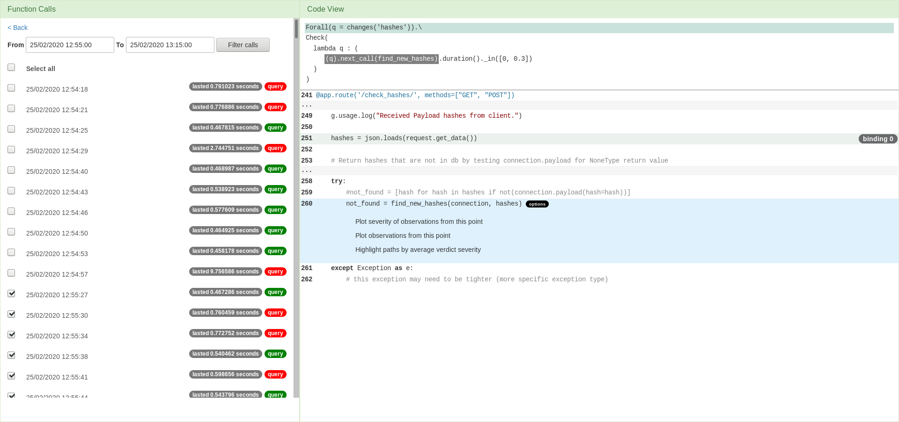
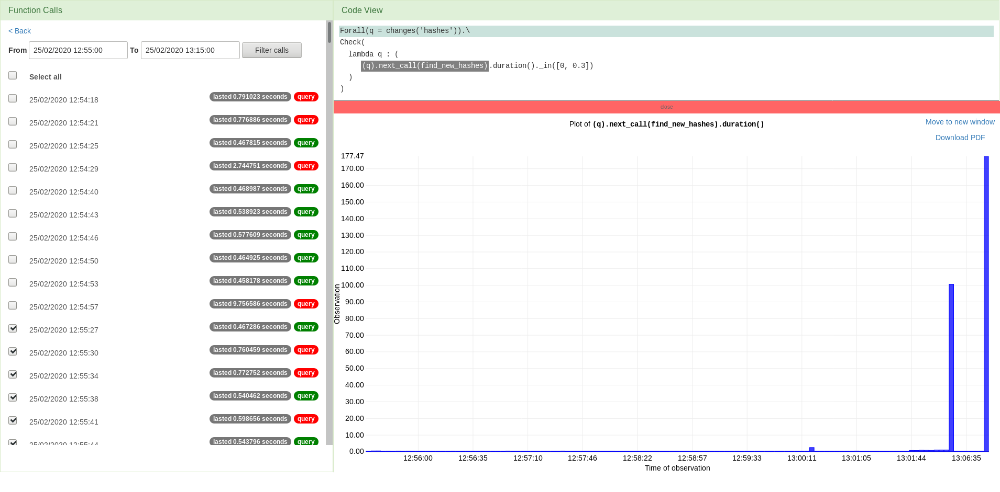
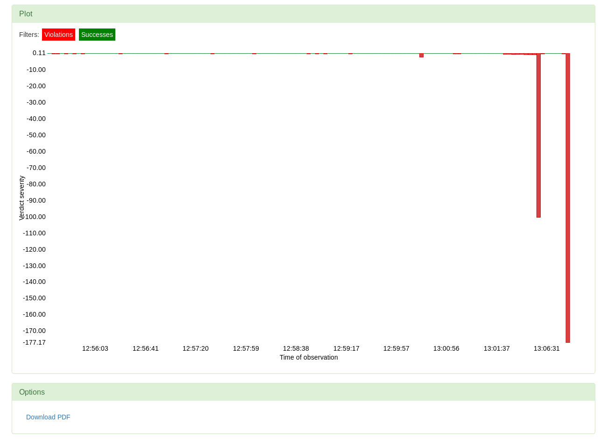
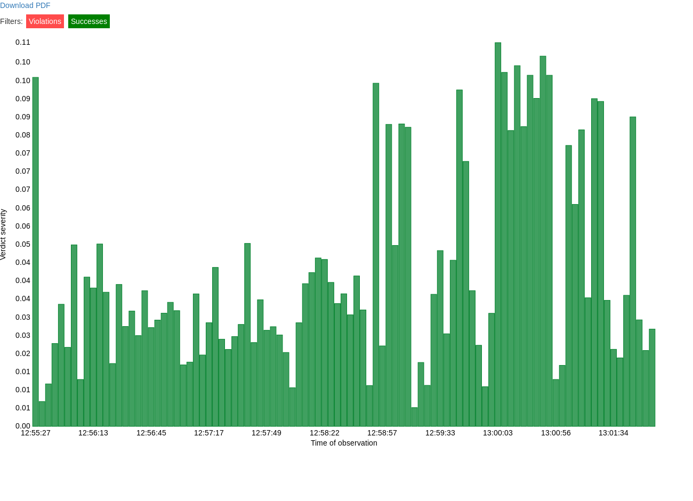
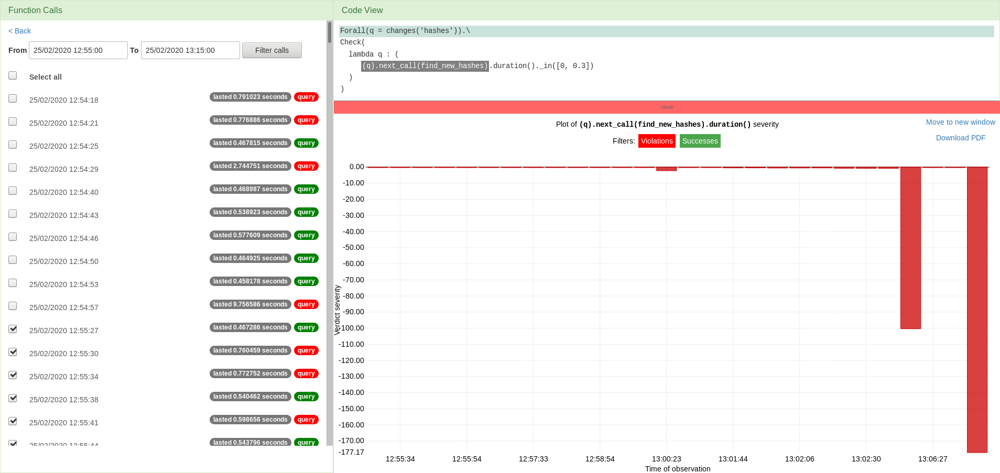
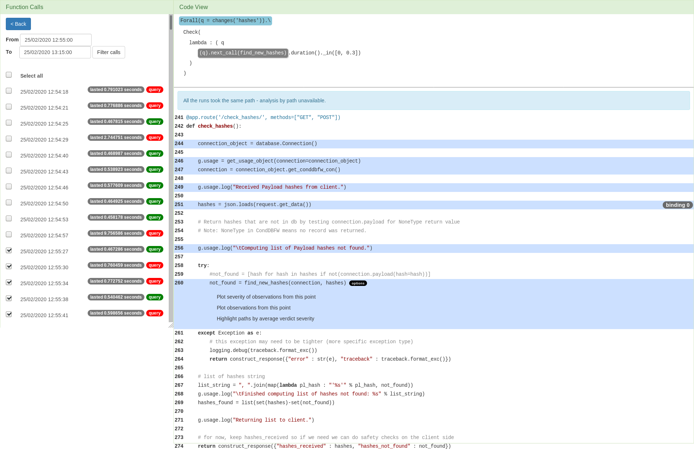

Finally, our selection sequence resulted in highlighting the instrumentation points that are
relevant for the selected calls, binding, and subatom. These points are now also interactive -
we need to choose one at which we want to analyse the results observed at runtime. The analysis
options are intended to enable visualisation of the measurements recorded at the chosen point.
This includes plotting the observed measurements' values, plotting the verdict severity values
and comparing the performance of the program with respect to the paths taken.

Plotting
The example above is based on a simple query that refers only to one point in the code.
As the query sets a constraint over the duration of calls of the function find_new_hashes,
it is logical that we might want to see the observed durations of those calls. The plot below shows
the observed durations of the mentioned function calls, but only those that occurred during the
selected function calls of the monitored function check_hashes.
1 / 4

The previous plot has shown us the measurements taken by VyPR. However, we want to see if those
observations satisfied the constraint given in the formula. In this case, that means checking
whether a recorded duration belongs to the interval between 0 and 0.3 seconds. The verdicts that
say if the condition was met or violated are also stored by VyPR, but as boolean values. Apart
from determining whether the observed value succeeded or failed to meet the constraint, it is also
of interest to know by how much. Verdict severity is a quantity whose absolute value is based
on the distance between the observed value and the border value between success and failure, assigned
a positive sign if the observation is a success and a negative one if there was a failure.
2 / 4

We can filter the plot to show only the successes or only the violations. Here are the successes.
3 / 4

We can filter the plot to show only the successes or only the violations. Here are the violations.
4 / 4

❮
❯
Path Highlighting
Having detected the performance successes and issues, we want to also find the potential sources
of inefficiency. Filtering the results by the path taken through the code will reveal whether
verdicts taken by the runs that took a particular path are significantly worse than others. Selecting
the option to highlight the paths by verdict severity will expand the code to show all the lines
and colour the path differences depending on the average verdict severity observed along each path.

In this case, only one path through the program is found. The code view is expanded and the path
is highlighted, but viewing plots by paths is unavailable. See an example that shows analysis by
path here.